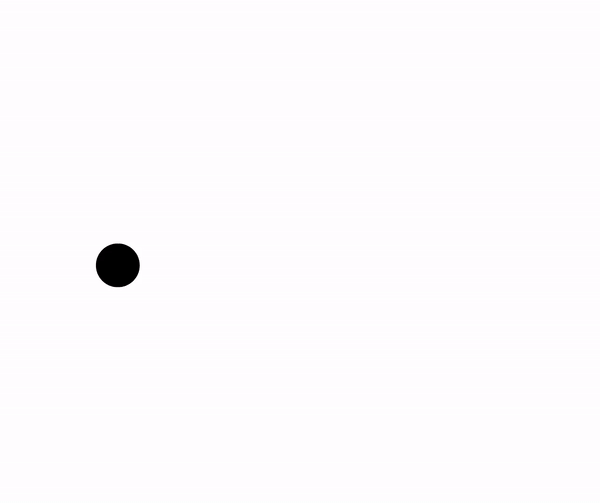
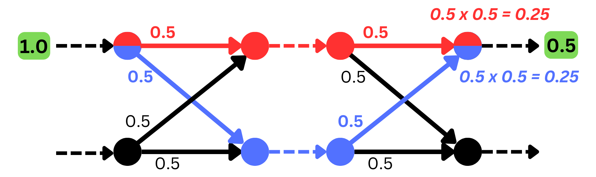
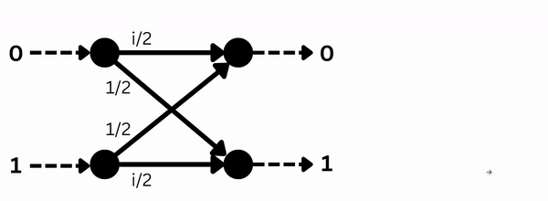
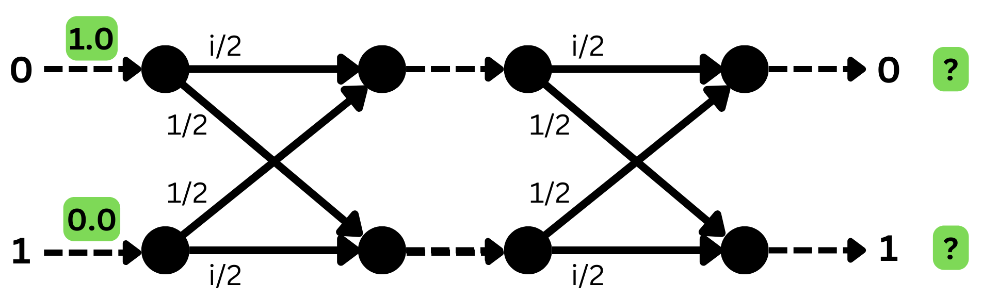
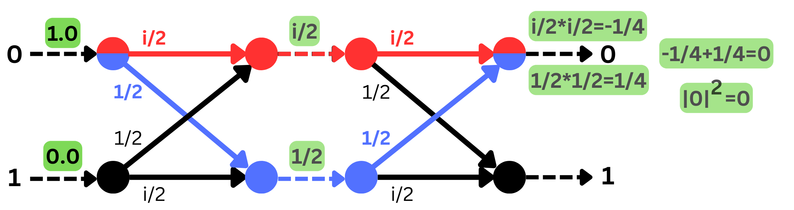

A quantum circuit is a network of wires, where we imagine qubits traveling around and going through different quantum gates. To understand what this actually looks like, it will be much easier to first understand probabilistic circuits
If you've ever drawn a probability tree, you've also drawn a probabilistic circuit!

For example, if you have a biased coin colored blue and red, landing on
blue \(60\%\) of the time, and red \(40\%\) of the time. We can describe
the process of flipping this coin twice using the probability tree to
the right.
We can see how the probability mass progresses through the tree
(highlighted in green), by multiplying probability mass with the weight
of each edge it passes over.
Let's say we're going to consider it a "win" if we flip different colors
in our consecutive tosses. We can then get the overall probability of
"winning" by adding up all the final probability masses that correspond
to our win scenario, so in this case \(0.24+0.24 = 0.48\), not too bad
odds!
Let me show you a circuit that models a coin flip!
In the gif above, we see a setup that has two inputs and two outputs, much like how logic gates take in inputs and outputs on circuits. As you might see, this specific gate gives out \(50\%\) to the top and \(50\%\) to the bottom, regardless of the input. This coin-flipping gate actually has a name: the Hadamard Gate!
Now, I want you to imagine placing two of these in a row so that the outputs of the first one map into the input of the next. Stop and consider what the output of the second gate should be...
After some thinking, it feels natural that the output of the second Hadamard gate will also be \(50/50\), since every Hadamard gate outputs \(50/50\), regardless of input. We could also come to the same conclusion by following the possible paths, and adding up the probabilities of each path:

The picture above shows that if you start at the top input, you have a
\(50\%\) chance to end up at the top output, which makes sense!
Now, we're ready to see how all of this will work when we use quantum circuits instead, things are about to get weird.
A quantum circuit, is just like a probabilistic circuit, except that the
edge weights may be complex numbers. Okay, now what does that mean?
Let's remake the Hadamard Gate but in the quantum world (Notice the complex weights of the top and bottom edges).

So far, not much has changed. We're still letting our probability values
traverse the network, multiplying with the weight of each edge as we go.
Actually, we should call our probability values "probability amplitudes"
now, because they can be complex or even negative, and they don't need
to add up to \(1\) anymore. This doesn't make sense for normal
probabilities. In the very end, we do a special operation \(|x|^2\) on
our probability amplitudes to get rid of negatives and complex values,
the result is our unnormalized probability. In the example above, we see
that the final unnormalized probabilities are equal to each other, which
is the same result we got in our Hadamard gate before, a \(50/50\)
outcome if we started at the top input!
Also, notice that we've labeled the top input with a \(0\) and the
bottom one with a \(1\), we can now treat them as bits of input where we
either input a \(1\) or a \(0\). In the probabilistic world, we start at
a single point, with the entire probability mass, letting it spread out
to the different possible outcomes.
In the quantum world, we input a qubit and get out a qubit! In the gif
above, it looks like we have two different inputs and two different
outputs, but really we're inputting a single qubit (that happens to have
a \(100\%\) probability to collapse to a \(0\) if we were to observe
it), and outputting a single qubit (that now has a \(50\%\) chance to
collapse to a \(0\), and a \(50\%\) chance to collapse to a \(1\), if we
observe it). We've put our single qubit into a
superposition!
Now let's think, if I connect two of these quantum Hadamard gates in series such that the probability amplitudes (the values before we do \(|x|^2\)) of \(0\) and \(1\), get inputted into the second Hadamard gate. If I plug in a \(0\) (a qubit that is \(100\%\) at \(0\)), what's the probability that I will end up at \(0\) again? (technically, the final qubit's probability for \(0\))

Here is when things get funky. We can get the overall probability
amplitude of a single path by multiplying all the weights of the edges,
and then performing our operation \(|x|^2\).
If we look at the top path, we have \(i/2 \times i/2 = -1/4\), which, if
we plug into our operation we get \(|-1/4|^2=1/16\).
If we look at the path that goes from 0, then down in the middle, and
then up to \(0\) again, we have \(1/2 \times 1/2\) = \(1/4\), which, if
we plug into our operation we get \(|1/4|^2=1/16\). There's a \(1/16\)
probability amplitude associated with each path individually.
So overall, there are two different valid paths with non-zero probabilities. But if we want to calculate the total unnormalized probability of going from \(0\) to \(0\) we need to sum the paths' probability amplitudes first and then do \(|x|^2\).

How absurd! There are two different paths, which each have a non-zero
probability amplitude, but if we take both into consideration they
cancel each other out!
This is quantum interference, just like how waves can interfere
with each other and cancel out, so can our probability amplitudes. This
is the core feature that differentiates quantum circuits from
probabilistic ones.
You can try this out in this quantum circuit simulation from
https://thequantumlaend.de/
built by the University of Stuttgart.
Remove all but \(1\) of the qubits, then set the system up like the
pictures below and observe how the histogram on the bottom changes.
The question now is, what benefits do these quantum circuit models provide? Why not just use our classical models of computation?
In terms of computability, there is actually no difference between the two computational models, as any problems that can be solved with quantum models can also be solved with classical computation models given enough time.
The key phrase, however, is “given enough time.” Many computational problems that exist today, even though theoretically solvable by our classical models of computation, are practically impossible to solve, because they require so much time to complete that they do not make sense to even attempt!
This is where quantum circuit models can come into play. They have the potential to solve such complicated problems with exponentially fewer computational steps than the best-known non-quantum algorithms! This capability, known as quantum supremacy, is a result of the principles of quantum superposition and entanglement, which would, in theory, allow quantum computers to explore multiple computational paths simultaneously, a property that classical computational models have not been able to exhibit.
There has been some preliminary progress in quantum algorithms that provide some significant time benefits over classical models. One common algorithm is Shor’s algorithm. The best-known classical algorithm for integer factorization requires super-polynomial time. However, with the quantum benefits of Shor’s algorithm, this can be completed in polynomial time, representing a significant time reduction from classical algorithms.
Another example is Grover’s algorithm, for finding marked
elements in an unstructured database. For a database with \(N\)
elements, a linear search would normally take \(O(N)\) time. Grover’s
algorithm requires just \(O(\sqrt{N})\) time, providing a quadratic
speedup for the problem, especially for larger database sizes.
An example circuit implementing the algorithm is shown below, using just
two qubits to search through four possible states .
These quantum algorithms show the compelling potential to revolutionize the field of computational theory.
How are these quantum circuit models relevant to the ongoing \(P = NP\) debate? The debate questions whether the set of \(P\) problems - problems that can be solved in polynomial time; relatively quickly - is equal to the set of \(NP\) problems - problems that can be verified in polynomial time, but can take longer (possibly exponentially longer) time to solve. In other words, can all those tough \(NP\) problems be cracked just as quickly as the relatively easier \(P\) problems?
Quantum computing doesn't give us a straightforward answer to this question, but it does shake things up. While classical computers might struggle with \(NP\) problems, quantum computers could potentially zip through them (thanks to their unique abilities of superposition and entanglement!).
This raises the intriguing possibility of \(NP\) problems being polynomial-time solvable on quantum computers, blurring the line between \(P\) and \(NP\). The implications of this would be profound, as it could revolutionize industries reliant on computational efficiency (such as transportation and resource allocation), but could also have adverse effects on existing industries reliant on the difficulty of solving certain problems, such as blockchain technologies and cryptography.
We've seen some mind-blowing possibilities and jaw-dropping theories of quantum circuit models, as well as all other concepts in the field of quantum computing. However, we've barely scratched the surface! We still have a long way to go, and we're far from having super-powered quantum computers that can tackle all the complex real-world problems out there.
However, with every step, we can get closer to finally unlocking the full potential of quantum computing. This journey may lead us down unexpected paths, revealing new complexities and challenging our understanding. But that's the thrill of exploration! Let's dive deeper and push boundaries; who knows what incredible discoveries await?üöÄ
Cunningham, J. (2020). A Talk on Quantum Finite Automata. YouTube. https://www.youtube.com/watch?v=PFsMHcQyJ5g
O'Donnell, R. (2015). Lecture 1: Introduction to the Quantum Circuit Model. CMU School of Computer Science. https://www.cs.cmu.edu/~odonnell/quantum15/lecture01.pdf
THE QUANTUM LÄND. (2024). Quantum Circuit Simulator. THE QUANTUM LÄND. https://thequantumlaend.de/quantum-circuit-designer/
Romanello, R. (2021). Quantum Finite Automata. University of Udine. https://riccardoromanello.github.io/downloads/mthesis.pdf